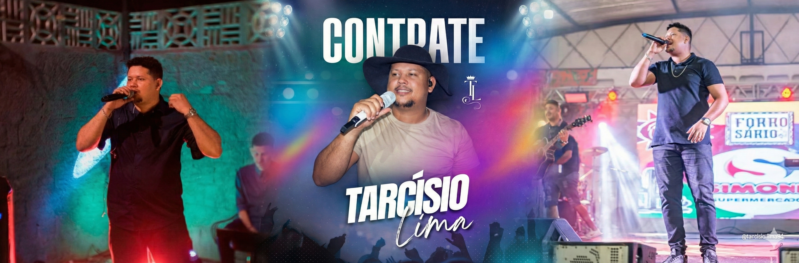

Acompanhe a Agenda
Fique por dentro de todos os shows da semana, bastidores e novidades em tempo real diretamente no Instagram.
Seguir @tarcisiolima_cantor →Apresentações
Sobre Tarcísio Lima
Tarcísio Lima é um cantor pernambucano reconhecido pela versatilidade, carisma e energia no palco. Com um show dinâmico e envolvente, apresenta um repertório que transita entre Forró, Brega, Sertanejo e MPB, garantindo conexão com diferentes públicos e tipos de evento. Atuando em toda a Região Metropolitana do Recife, com destaque para Igarassu-PE, sua cidade natal, Tarcísio Lima vem se consolidando como artista na cena musical regional. Além da carreira solo, é líder e cantor da Banda Católica Libertah, unindo musicalidade, mensagem e propósito em suas apresentações.